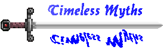
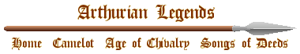

|  |  |
Excalibur was the wondrous sword of Arthur. Though, this sword had appeared in Geoffrey of Monmouth's work, called it Caliburn, as the fabled sword that was a gift from Avalon, it wasn't until in the later legend that Excalibur was a sword given to him by the Lady of the Lake. Geoffrey's Caliburn didn't have any significant role in Arthur's legend.
The Legend of Excalibur is only part of alternative account about the early life of King Arthur. Here, it begin with his conception through the magic of Merlin, and end with Morgan le Fay's failed plot to murder her brother.
Since there are numerous episodes and adventures I have left some of them out, particularly events that has nothing to do with Arthur.
This page come from the following sources:
Robert de Boron was a French writer who wrote a trilogy in verse, around 1200, which were called Joseph d'Arimathea, Merlin and Perceval. Perceval is lost, while Merlin is fragmented.
The Prose Merlin or Vulgate Merlin form one of five romances of the Vulgate Cycle. The Prose Merlin was said to be the prose version of Robert de Boron's work in 1200.
The Suite du Merlin or the Merlin's Continuation, written by unknown author in 1245, belonged to part of the Post-Vulgate Cycle. Though, there are some similarity to the Prose Merlin, it is actually alternative version.
The English author, Sir Thomas Malory, who wrote the Morte d'Arthur in 1469, had used last two sources for his own work, as well as other French and English sources.
Please note that the tales of Lancelot's love for Queen Guinevere, the quest for the grail, and the death of King Arthur are told in separate pages. You will find the links to these stories in the Vulgate Cycle page, since it would be impossible tell all the stories in full here. My suggestion is that you begin reading this page (Legend of Excalibur), before reading Lancelot, the Grail and Arthur's death, in this order.
Genealogy:
House of King Arthur (Vulgate / Post-Vulgate version)
Related Pages:
Life of King Arthur
Vulgate Cycle
Lancelot
Quest of the Holy Grail
Death of King Arthur
| Birth of Arthur | ||||||||
|
The story about Arthur's birth (Uther's disguise as her husband to seduce Igraine) remained mostly unchanged (See Uther for the story of Uther and Igraine). However, there are differences between Geoffrey's version and those later authors. What had remain unchanged was the following: Merlin used his power to transform Uther to look like Igraine's husband, Gorlois (Hoel) the Duke of Cornwall (or Tintagel), in return for the child that Uther and Igraine would have. While Uther coupled with Igraine at Tintagel, her husband was killed in battle at another castle. What had changed was that when Arthur was born, Uther had no choice but to give the infant (Arthur) to Merlin, the price of helping the king to sleep with Igraine. Once the infant was born, Merlin took Arthur from the mother. Merlin left Arthur with his new foster-father, Sir Anton (according to Robert de Boron's Merlin; in Malory's Le Morte d'Arthur, the foster father was called Sir Ector). Anton (Ector) raised Arthur with his own son, known later as Sir Kay. According to Geoffrey, Arthur had a sister named Anna. Here, Arthur has a half-sister named Morgawse (ie. daughter of Gorlois and Igraine), who later married King Lot of Orkney, and was the mother of Gawain. Arthur had another two half-sisters who were named Elaine, who married Nentres of Garlot and became the mother of Galeshin; and of Morgan le Fay, the sorceress, who married Urien and became the mother of the hero Yvain (Owain). Arthur would not meet his mother and sisters until some time after he had became king. |
|
|||||||
| Kingship and Early Wars | ||||||||||
|
After Uther's death, many British nobles tried to succeed their king. Merlin told these nobles that the man who draws the magic sword out of the stone, would be king of Logres (Britain). Only Arthur was able to draw the sword from the stone. Many people, particularly the lords and kings refused to swear fealty to a boy who was not even sixteen. They decided to rebel then serve the boy king. In the first battle, Merlin had advised the young king not to draw Excalibur until he was on the point of defeat. The battle favoured his enemies; he saw that they had surrounded him. It was at this point that Arthur drew Excalibur from his sheath. The light reflected from the blade of his magical sword confounded his enemies. The tide of the battle then turned in his favour. At the end of the day, the enemy kings' armies were routed. (The sword was called Excalibur, which means, "cut steel". Early tradition (by Geoffrey of Monmouth, Wace and Layamon), called the sword Caliburn; a magical sword from Avalon. The tale of Arthur drawing the sword out of the rock first appeared in Robert de Boron's French verse tale, called Merlin. But the English author, named Sir Thomas Malory (and in the French Suite du Merlin (Prose Merlin), c. 1240), wrote that the sword that Arthur had pulled out of stone was not Excalibur; in fact, Arthur broke his first sword in the fight against King Pellinor. Shortly after, Arthur then received a new sword from the Lady of the Lake, which was explicitly called Excalibur. Malory distinguished the sword Arthur pulled out of a rock from the sword he received from the Lady of the Lake, and it was the second sword that was the true Excalibur.) Arthur had to fight a series of wars against the British nobles who opposed to his rule. Among the eleven British kings that Arthur fought against was King Lot of Orkney, his brother-in-law. (This contrast with Arthur's war against the Saxon invaders in the early tradition. Also in the early tradition, King Lot was ally of Arthur, not his enemy). According to the Vulgate Cycle, Suite du Merlin and Malory's Le Morte d'Arthur, King Ban of Benwick and his brother King Bors of Gaunes, aided Arthur in the war against the eleven kings [Book I of Morte d'Arthur, chapters 9-17]. In return that Arthur helped them with their war against Claudas, king of the Waste Lands. King Ban became the father of Lancelot and Hector, while King Bors was the father of Bors, who was one of the Grail heroes, and Lionel. After the first battle against the eleven kings, Arthur met Lionors, daughter of Earl Sanam. Arthur fell in love with the damsel and slept with Lionors, where she bore a son. According to Malory [Book I, chapter 17], Arthur became the father of Borre. (Chretien de Troyes and the Vulgate Cycle called his son Loholt or Lohot, by a damsel named Lisanor). These three kings also rescue King Leodegan of Camelide (or Leodegrance of Camelerd), and defeated King Rience of North Wales. Here, Arthur met Leodegan's beautiful daughter, Guinevere, for the first time [Malory's Book I, chapter 18]. The rebel kings, including King Lot, decided to make peace with Arthur and pay homage to Arthur. |
|
|||||||||
| Morgawse and the Questing Beast | ||||||||
|
In the Suite du Merlin (Post-Vulgate, c. 1240), after the Battle of Bedegraine, Arthur had only agreed to a peace treaty with King Lot and the other rebel kings. Arthur met with Morgawse, wife of King Lot, for the first time. Arthur fell in love with her and slept with her, where she conceived Mordred. By having sex with Morgawse, Arthur had unwittingly committed incest, because Morgawse was really his half-sister. Arthur did not find out Morgawse was his half-sister, until Merlin rebuked him later, for letting his lust overcome him. Merlin foretold that his son Mordred would one day bring about the king's death and the downfall of his kingdom. (In the Vulgate Merlin or the Prose Merlin, the story was quite different from the one above (Suite du Merlin and Morte d'Arthur). At first, the tale say that Mordred was the son of King Lot and Morgawse (in chapter 4). Later, it indicated that Mordred's real father was Arthur. According to the Vulgate version, Arthur was not the king when he slept with his half-sister. Neither knew they were related. Arthur was serving as a squire to Kay, when Uther Pendragon, Arthur's real father had died. At Uther's death, the kings and nobles met at Carduel. Among them, was King Lot, who came with his wife and sons. Arthur fell in love with Morgawse, and when one night when the king went to meet the other barons at the Black Cross, Arthur entered her room and lay on the bed. Morgawse thinking that her husband had returned, embrace Arthur. They made love, where Mordred was conceived. The next day, Arthur revealed the truth to Morgawse. Morgawse, who had thought she was faithfully making love to her husband, was shock at the news, but they both made a pact to never reveal of her shame of committing adultery. It was at the time, when Morgawse was about to give birth, when news that her brother was crowned king of Logres. There was war between Arthur and King Lot, who did not believe that Arthur was Uther's true son. It is not know how she knew that Arthur was her own brother, but this revelation of her kinship was not known until Gawain was old enough to become knight. This version doesn't reveal if Arthur knew that Morgawse was his sister, nor did he know that Mordred was his son. But he was probably aware of both, later in his life.) Arthur also meets his mother, Igraine and his other sister, Morgan le Fay, for the first time [Book I, chapter 21]. (Merlin had taken him away from his parents at birth, and was brought up by foster-father, Sir Anton or Ector). Arthur had a dream where he sees the Questing Beast. You may ask yourself "What was the Questing Beast?" Well, according to the theories I have gathered, the Questing Beast represent the mortal sin committed by Arthur, when he had unwittingly slept with his half-sister, Morgawse, wife of King Lot and mother of Gawain. This union would result in Morgawse, giving birth to a child who would bring about Arthur's death and the destruction of his kingdom. But the real origin of the Questing Beast can be found near the end of Post-Vulgate version of the Quest of the Holy Grail. King Pellenan, the Maimed King explained about its origin to the Grail hero, Galahad, after the Saracen knight, Palemedes, had slain the monster. There was a daughter of King Hipomenus (of Logres?), who was not named. The princess was the fairest in the land at that time, as well as being wise and intelligent. She had mastered the seven arts, including that of necromancy. The princess fell in desperate love with her own brother (also unnamed), who was most handsome of men. Her brother was a devout Christian and he wanted to remain chaste. So when the brother found out about her secret desire for him, he rebuked her. The princess felt shame, and would have thrown herself off the highest tower of her father's castle. But a demon visited her (definitely a incubus, perhaps the Devil himself), who wanted to weave destruction upon the House of Hipomenus. The demon appeared as a handsome young man, who convinced her that he could help her win her brother's love, but the price was having intercourse with him. She agreed to the demon's term and had sex with the incubus. The moment the princess copulate with the demon, all love and desire vanished from her. The demon convinced her to destroy her brother, and she followed his plan as the incubus had given it. She secretly entered her brother's chamber, to display her incestuous lust for her brother. The brother became angry with his sister, beat her a few times before she screamed for help. Hipomenus and his guards found them in compromising position. His daughter accused her brother of raping her weeks ago, because she suspected that she was already pregnant, so everyone would blame her brother. When Hipomenus heard this, the king had his own son thrown in dungeon. It was the princess who decided on her brother's punishment. The king ordered that his son would be maul to death in pit full of starving dogs. The king had the dogs fasted for seven days. Before her brother was thrown in, he proclaimed his innocence and he knew that his sister had given her lust to a demon, so he foretold that his sister was carrying the demon's child. Since his death would be from the hungry dogs, she would given birth to a monster, who would bark like these dogs, known as the Questing Beast. The brother also foretold that beast will kill many men and women as it roamed throughout the kingdom of Logres. Only when the Good Knight joined the hunt could stop the evil creature. After his prophecy, the king's son was thrown into the pit. The hounds tore him to pieces and devoured him. Hipomenus had his pregnant daughter cared for, by the ladies of the palace. His son's foretelling became true when his daughter gave birth to the evil creature. It immediately killed and devoured many ladies, except for its mother and one of the ladies. The Questing Beast fled from the castle, visiting death and destruction on anyone the monster come across. When the king realised the truth that his son was innocent, he had his daughter seized and tortured until she revealed the whole truth. Then the king had his daughter die in a death worse than her brother. The great knight, King Pellinor, father of the heroes Lamorat (Lamorak) and Perceval, was the first hunter of the Questing Beast, but he died before he could complete his quest. Then around the time of Grail quest, it was Palemedes, the Saracen hero, who would eventually slay the monster, with the help of Galahad. (See the New Sword, where Arthur encountered Pellinor). Another name for the Questing Beast as Beast Glatisant can be found in Sir Thomas Malory's Le Morte d'Arthur (Book 9 Chapter 12). Malory described the creature as have a head like a snake, body of a leopard, buttocks of a lion and foot like a hart. The belly of the Questing Beast made sound like that of thirty couples of starving hounds. Merlin had foretold that the Arthur's child who would soon be born on May Day, (May 1), and he would cause Arthur's death and the destruction of the kingdom. Arthur tried to avert his fate, by imprisoning all child born on the month of May. Merlin told the king he could not possibly changed the future. That month, Arthur had ordered the children within Logres gathered at the tower, without revealing the true nature of his plan. There were 550 infants taken to the tower. Among them was the son of Arthur and Morgawse, that was christened Mordred. Morgawse's husband, King Lot, assumed that Mordred was his own son, unaware that Morgawse had committed adultery and incest with Arthur. On the island of Orkney, Lot sent Mordred by ship to Arthur, with some ladies and his men. As Lot put Mordred in the cradle, he had accidentally bump Mordred's head, which would leave a scar on his forehead. A storm broke out at sea, before it reached Logres, killing everyone on board, except for one infant in the cradle. The cradle floated to the nearest shore, where it was found by a fisherman. The fisherman decided to give the child in the care of Duke Nabur the Unruly, because the cloth that covered the infant, was a sign of royalty. Duke Nabur was already a father of Sagremor, who was born over a month ago. Nabur found a note in the cradle that say the infant was named Mordred, but no mention of the infant's parents. Nabur decided to raised the child with his own son. Back at the tower, Arthur was contemplating murdering the 712 infants. Arthur had a vision where a man rebuke the king for wanting to save his own skin by killing innocent children. Arthur decided to placed all the babies in an unmanned ship and set it adrift into the open sea. Jesus taking pity on the children, sent the ship to the Amalvi, belonging to King Orians. Orians had a new castle built on the remote island to hide the children from Arthur. Back at Logres, the barons in Arthur's court found out about the king's treachery. There would have been a revolt, had Merlin not told the barons of their king's intention to save the entire kingdom. Merlin spoke of his prophecy that one of the children would destroy the kingdom. Merlin assured the barons that the children were all safe and they would be reunited with them ten years from now. Not all the barons were satisfied with Merlin's prophecy. When King Lot found out, he decided to declare war on Arthur. Lot joined King Rion as ally against Arthur. (See Knight with Two Swords) |
|
|||||||
| The New Sword | ||||||||||
|
Anyhow, Arthur meet a knight named Pellinor, who had been searching for the Questing Beast for a year. Arthur would later challenge and fight Pellinor in single combat. In the middle of the fight, his sword had broken in two. Merlin rescued Arthur, by putting Pellinor to sleep with his spell. Merlin informed Arthur that the king must not kill Pellinor, because Pellinor would have two sons, named Lamorak and Perceval, who would later become Arthur's important allies. The sword that Arthur had drew from a stone, which indicated that he was the true king of Logres (Britain), was not the true Excalibur. Since Arthur's first sword was broken, Merlin directed the king to a lake, where they met the Lady of the Lake. They also saw a hand holding a beautiful sword, raised out of the water, in the middle of the lake. The lady informed Arthur that the sword belonged to her. She would give the sword to Arthur only if the young king grant her a gift or boon in return. Arthur promised the Lady of the Lake that he would. Arthur and Merlin took a boat to the middle of the lake. Arthur took the sword from the hand. The hand immediately disappeared into the water. (At the end of Arthur's life, Arthur would return Excalibur to the Lady of the Lake. See the Last Act (Vulgate version) and Malory's version of the Death of King Arthur.) Merlin asked the king if he like the sword or the scabbard better. Arthur preferred the sword. Merlin told him, his choice was bad, because as long as the king keep the scabbard, no weapon could harm him; meaning Arthur couldn't bleed to death. The sheath was worth ten times that of Excalibur. Upon his return to castle, King Urien asked Arthur's permission to marry Morgan le Fay, which the king agreed. Arthur gave a large portion of land to his half-sister, including the castle Taruc. Upon their wedding night, lay with her, who conceived Yvain. Also by this time, he received news from Rion, the king of North Wales, threatening to declare war upon him, if Arthur doesn't surrender to him. Rion had conquered 11 kingdoms, taking beard from each conquered ruler. Arthur rebuked the messenger, and beside that Arthur was still young enough to not have a beard. Among Rion's allies was King Lot of Orkney. |
|
|||||||||
| Knight with Two Swords | |||||||||
|
The following story about Balin, can only found in two sources: the Suite du Merlin (Merlin Continuation, Post-Vulgate, c. 1240), and Le Morte d'Arthur by Thomas Malory (1469). As Arthur prepared for a war against King Rion, Lady Lile of Avelion came into Arthur's court with a sword girded around her waist. It caused excitement in the hall, because no lady has a sword girded to her before. She was distressed, because she could not undo the clasps of the swordbelt, nor draw the sword from the sheath (Sword of the Strange Clasps). The Lady told them that only a knight, who is pure of heart, could draw the sword, and thereby undoing the sword-belt. The knight must be the best; he must also be loyal and free of treachery. She also told them that anyone, who unsheathes the sword, must return the sword to her. Arthur was the first to try to unsheathe the sword, but the king could not so much as draw a hairsbreadth of the blade out of the scabbard, no matter how much force he exerted. The Lady informed Arthur that he not use so much force, because the true knight will able to draw the sword without effort. The king allowed all the other knights to try, but all had failed like their king. All except Balin le Savage, a poor and disinherited knight from Northumberland. Balin had not tried, because of his low rank in Arthur's court. Only Balin was worthy of performing this task, when he released the Lady from the sword-belt, and drew the sword from the scabbard. Balin so admired the blade so much that he decided to keep this sword, despite Lady Lile's protests. The Lady warned that if he take the sword away from her, then he would kill someone he loved most in the world. Balin was unfazed by her interdiction, and told her that he would not give up the sword, even if it were to cause his own death. Then she gave him further warning that he would regret all this within two months from now, when he and another knight would kill one another in a duel. From that moment, Balin became known as the Knight of Two Swords. Then the Lady of the Lake, who gave the new sword to Arthur, arrived in Camelot. The lady told Arthur that the sword was called Excalibur, and it was time, for the king to give the gift he had promised her. She wanted the head of Balin, for killing her brother, or the head of Lady Lile, for causing her father's death. Arthur was shocked by this demand, and refused to do what the Lady of the Lake's wishes. Balin angrily used his new sword and severed the head of the Lady of the Lake. The whole court was outraged by Balin's action. Arthur was angry with Balin, because he was in debt to the Lady of the Lake and she was under his protection so as long as she was underneath his roof. Balin immediately left Camelot. Balin set out on a quest hoping to win back Arthur's favour. Balin set out on a journey, but encountered an Irish knight set about avenging Arthur's dishonour by defeating Balin. Balin reluctantly fought and killed the Irish knight. A maiden arrived mourning over the death of her lover, killed herself with lover's sword. Balin was distressed over the whole ordeal. Balan arrived, and a little later King Mark of Cornwall arrived. Balan is Balin's brother. Mark refused to leave until he buried the unhappy couple. We find out that the knight was named Launceor and the maiden was called Lione. Merlin, disguised as a peasant, also met Balin and his brother. Merlin foretold that Balin will delivered the Dolorous Stroke and years from now, two of the greatest knights in the world would fight one another over the graves of Launceor and Lione. (These two knights were Lancelot and Tristan). King Lot thought Arthur had brought about the death of his youngest son, Mordred. However, Mordred was actually the son of Arthur and Morgawse, Arthur's half-sister, and the child was safe in the fosterage of Duke Nabur, father of Sagremor. See the previous article called Morgawse and the Questing Beast. Lot declared war upon Arthur. King Lot formed alliance with King Rion (Rience) and his brother Nero. Rion had invaded Logres, killing men and sacking castles and villages. Balin and Balan decided to kill Rion, hoping to win back Arthur's favour. Balin and his brother met Merlin, who was now disguised as a traveller or vagabond. Merlin knew of Balin's plan, and persuaded the hero to capture Rion instead of killing the king. Merlin knew that Rion would visit a wife of the Duke of Vaux, during her husband's absence. Rion was secret lover to the Duke's wife. Rion had forty knights with them. Balin wounded and captured King Rion. Only twelve of Rion's forty guards survived. The brothers made them all prisoners. Though, Rion had become Arthur's prisoner, the king still have to fight against Rion's army including that of Rion's brother Nero, who had a larger army than his own. Merlin revealed Arthur that Lot would be fighting on the other side. Lot was determined to see Arthur's death, for sending his son (Mordred) to death. The battle was fought on the plain of Tarabel. Though, Arthur's army was outnumbered, he had many great knights fighting on his side. Knights such as Sir Kay and Hernil de Rivel. Arthur himself had killed twenty knights in battle. But no knight were greater than Balin. Lot was about to enter the battle. Merlin failed to persuade Lot to remain loyal to Arthur. Lot refused to believe anything that Merlin told him, even when Merlin offered to show that Mordred was alive and well, within two months. So Merlin delayed Lot from joining the battle long enough for Arthur to defeat Rion's army. Balin had killed Nero. King Lot had also fought well. Lot confronted Arthur and killed the king's horse. Pellinor, Knight of the Questing Beast, came to Arthur's rescue. The men of Orkney were not defeated until Pellinor had struck their king down. Peace between Logres and Orkney were settled, after Orkney had surrendered. Arthur was greatly saddened by Lot's death. A great funeral was held in Lot's honour. Morgawse and her four sons attended the funeral. King Urien and his wife Morgan le Fay also attended the funeral. Morgan was pregnant. Gawain who was only eleven years old, swore to avenge his father upon Pellinor and Pellinor's family. Merlin foretold that the Quest would begin when the Knight with Two Swords delivered the Dolorous Stroke. Merlin also warned Arthur to safeguard the scabbard more than Excalibur. Though Arthur had suffered many wounds in this battle, he lost no blood. If Arthur were to lose the scabbard, he would never see it again. It was around this time that Merlin had become infatuated with Morgan. Morgan sought Merlin when she learned of his power. Morgan persuaded the wizard to teach her his magic. In return, Morgan promised to return Merlin's love. Morgan learned everything from Merlin in a rather short time, because she was extremely intelligent and quick learner. During that time, Morgan had given birth to Yvain. Balin met a stranger, a knight with strange quest with a maiden. Arthur had wanted to talk to this stranger, but the knight refused until Balin promised he would take up the knight's quest and offer him protection. As Balin and the stranger returned to Arthur's castle in Meliot, the knight was attacked by invisible foe. The stranger knight was impaled by a lance and died shortly after. The maiden was the knight's guide in the quest. Now, she would be Balin's companion and guide in the quest. They would meet again outside of the cemetery. Balin left Arthur on his quest to avenge the knight he had failed to protect. Balin met another knight whom he befriended. Merlin met them in another disguise, revealing the identity of the invisible assassin was Garlon the Red, the brother of King Pellam (Parlan or Pellehan). Merlin insisted that Balin should give up the quest or else bring sorrow and misfortune to Logres. Balin stubbornly refused to give up on the quest to avenge the unnamed knight he had failed to protect. When Balin and his new companion entered the cemetery, the invisible knight struck again, mortally wounded his new friend. Balin encountered a monk and found out that Gawain would avenge his father upon Pellinor. Balin met the maiden, who was his guide. Their first adventure came when they were trapped in the same custom in the castle that Grail knights and Perceval's sister would encounter over 22 years later. The custom required that a maiden had to fill a basin full of blood, so to heal the lady of the castle of leprosy. Balin's companion failed to heal the lady, but she did not died. (Perceval's sister sacrificed her own life to heal the lady. See Quest of the Holy Grail in the death of Perceval's sister.) After a few day of travel they reached the castle of King Pellam. Pellam was holding a feast on Sunday. Balin found out that Garlon the Red can become invisible at will, when he was armed. Balin pondered if he should attack Garlon when Garlon was unarmed but that would branded Balin as a coward or waited until Garlon was armed, making difficult for him when he can't see his opponent. As Balin thought of his dilemma Garlon noticed Balin was not eating the food, as a guest should. Garlon struck Balin's face with his gloves, for being rude. Balin answered by cutting off Garlon's head with swipe of his sword. Seeing Garlon fall, Pellam went to avenge his brother, shattering one of Balin's swords. Balin went from room to room to find another weapon. Balin entered one room where the Grail and the Bleeding Lance were kept. A voice warned him not to enter. Balin did not heed the voice since Pellam was pursuing closely behind Balin. Despite hearing the voice, warning the hero not to touch the spear, Balin seized the lance and ran the weapon through both of Pellam's thighs. It was this strike that was called the "Dolorous Stroke". A voice was heard throughout the castle that a great enchantment would fall upon Logres. The Dolorous Stroke had not only wounded a king, but set off an earthquake and laying waste to the land. Pellam was seriously wounded and his wound would not heal until the Grail knight (Galahad) healed him twenty-two years later, at the end of the Grail quest. Many people were rendered unconscious, including Balin. Some of them died in terror of the voice. Among those who had died was Balin's guide, the maiden who had accompanied him in his quest. Merlin arrived two days later and found that the people outside of the castle were too frighten to enter the castle to see if anyone had survived. Merlin went into the castle and found Balin lying there unconscious for two days. Merlin brought Balin out of the castle. Merlin showed the devastation of the three kingdoms that Balin had caused with that one stroke of the lance. Balin had been warned several times by Merlin and other people that this would happened. Balin had heedlessly sought glory and fame as a knight, only to bring sorrow to so many. Despite succeeding the quest to avenge the unnamed knight, Balin left the devastated kingdom; he was distressed that he had caused so much havoc and sorrow. (According to the Huath Merlin, Merlin rescued Balin from the ruin castle after Balin had delivered the Dolorous Stroke to the Fisher King. Balin was mortally wounded when the castle collapsed. When Balin witnessed the devastation he had caused he died repenting for what he had done.) Balin arrived at a castle that has a custom, where a knight-errant entering their castle, he must joust with another knight-errant from the island tower. Though Balin did not like custom, he thought they would see him as a coward if he did not joust with the other knight. As he ready himself for the coming joust, the host offered a new and better shield than the worn shield he now carried. However, a girl arrived at the castle, carrying a message for Merlin. The damsel told Balin that he would regret ever coming to this castle and accepting a shield that his opponent wouldn't be recognised. Balin had great foreboding of what will happen. His opponent emerged from the other tower, wearing red armour and shield, and mounted on white horse. Neither of them recognised the other knight. The two knights fought one another, long and hard. They only stopped fighting when both knights were mortally wounded. They were both horrified and grief-stricken when they revealed their identity to one another. As Merlin and the maiden, who had given the sword to Balin, had foretold, he would regret that he had ever kept the sword that he had won. Balan, his brother, was the red knight. Each has delivered a deathblow to the brother he loved. The only thing that Balin asked from the people of the castle and tower that would bury them together. They had both died by evening. Merlin arrived and attended the funeral of Balin and Balan. Merlin took Balin's sword and wrote on the pommel that only the best knight in the world (Galahad again) could draw the sword from the stone. Merlin set the sword into the marble slab. Merlin then made this stone float on water. The stone would float and moved around the world until it arrived in Camelot, 22 years later. See Quest of the Holy Grail, about Galahad drawing Balin's sword out of the stone. |
|
||||||||
| Marriage and the Round Table | ||||||||
|
Arthur decided to marry Guinevere, daughter of King Leodegan of Camelide (or Leodegrance of Camelerd). Merlin did not approve of this marriage because he had foreseen that she would take a lover, which would cause the destruction of the kingdom. Yet, Merlin didn't dissuade the king from marrying Guinevere, because he knew he couldn't avert this fate. Leodegan gave the Round Table to Arthur as a wedding gift. This table could seat 150 knights. According to Robert de Boron's Merlin (1200), Merlin had constructed the Round Table for Uther Pendragon, Arthur's father. Merlin had design the table using the Grail table as a model. Joseph of Arimathea had designed the Grail Table to only seat 13 people. However, the 13th seat was the Perilous Seat (Siege Perilous), which no one may sit on, without dying. So the Perilous Seat was left vacated. Like Joseph's table, only one seat was left vacated at the Round Table: the Siege Perilous. Merlin warned Arthur and the other knights that only the greatest knight in the world could sit in this deadly chair, and that knight would be the true Grail Knight. When Uther had died, Leodegan who was Uther's ally received the Round Table. Now the Round Table was used as dowry. Leodegan also gave Arthur a hundred worthy knights to sit at the table. Merlin and the Archbishop of Canterbury helped Arthur find the rest of the knights (49), to fill the seats of Round Table. The Knights of the Round Table swore oaths of fellowship. Gawain received his knighthood on the day of Arthur's wedding. |
|
|||||||
| Quest of the White Hart | ||||||||
|
During the wedding of Arthur and Guinevere, they witness strange event. A white hart (or stag) ran through Arthur's hall, followed by the brachet (bitch-hound), which would every now and then, the hound would bite the hart on its hindquarters. Thirty hounds pursued the white stag. A knight would then steal the brachet. A lady riding a white palfrey into Arthur's court, complaining that the knight had stolen her brachet. Another knight arrived and abducted the lady. Merlin told Arthur that he required three knights to fetch the hart and the brachet, and rescued the lady. Merlin assigned the individual quest to three knights. Gawain must seek out the white stag, while Tor, the bastard son of Pellinor, had to fetch the brachet. Finally Pellinor's quest was to rescue the lady. The author first speaks of Gawain's adventure. His brother Gaheris served as his squire, accompany the young knight's first quest. When Gawain chased the hart to a castle, a knight named Ablamor of the Marsh, was the lord of the castle, killed Gawain's two hounds. Gawain angrily fought the knight in single combat, because Ablamor had killed his hounds. Though the other knight admitted defeat, Gawain refused to give mercy to the knight. Just before Gawain could kill the knight, the knight's lady in desperation threw herself upon her lover. Gawain killed the lady when his sword struck off her head. Gawain was upset for killing the lady. Four knights would later capture Gawain and his brother. The four knights would have killed the brothers, had Gawain not revealed his identity to the four damsels that he was the nephew of King Arthur. They set him free and gave the hart to Gawain. When he returned to Camelot, Gawain won shame instead of glory. Guinevere and all the ladies punished Gawain. They also made him promise to always give mercy to another knight who ask for it, and that he must always give aid to any lady or damsel who ask for it. Tor's adventure was more successful in retrieving the brachet (bitch-hound). Pellinor's success was mixed. Though King Pellinor was also successful in his quest to rescue the lady, his adventure was marred by the fact that he failed to aid a damsel weeping over a wounded knight, because he was in a hurry to complete his quest. The damsel cursed Pellinor that one day his friend will fail him when he needed help the most. Pellinor had rescue the lady by defeating two knights: killing one and wounding the other. As Pellinor return to Camelot with the lady, he found that the damsel, he had abandoned, had killed herself in her grief. While lions had ate part of her body. This had greatly upset Pellinor. Pellinor transported the dead knight's body to hermitage for burial, while he took the damsel's head back with him to Camelot. As Pellinor retold his adventure to the people at Camelot, Merlin sadly informed the king that the dead damsel was Pellinor's own daughter, Elaine or Heliabel, whose mother was the Lady of the Rule. Finally we know the identity of the lady that King Pellinor had rescued. Her name was Niniane (Nimue according to Sir Thomas Malory's Le Morte d'Arthur), the Lady of the Lake. |
|
|||||||
| Death of Merlin | ||||||
|
After the Quest of the White Hart, Niniane (Nimue), the Lady of the Lake, stayed in Camelot for some time. During that time, Merlin had fallen in love with her. He was quite besotted with her and he followed her everywhere, to her annoyance. Merlin, who was a prophet as well as a sorcerer, knew that Niniane would be the one to cause his death, yet he couldn't restrain his lust for the Lady of the Lake. Before the wizard left Arthur, Merlin told the king he would never return. His feeling for Niniane irritated her, but she promised she would returned his love if he would teach his magic to her. Because of his uncontrollable lust for the Lady of the Lake, he foolishly agreed, despite the warning of his vision of his own doom. Later, Niniane wanted to return home. Merlin wanted to follow her. They took a ship where they landed in Brittany. There, they met King Ban's wife, Helen, who was holding her infant son, named Galahad, but who would later be known as Lancelot. Merlin foretold that either Lancelot or her grandson (Galahad) would become the greatest knight in the world. Later at the death of Ban, Niniane would later take the child away from Helen and raised the child as her own. (See the Vulgate Lancelot about Lancelot and the Lady of the Lake.) Merlin and Niniane continued on their journey, until they arrived in the Forest of Broceliande. Merlin told Niniane that Arthur was in danger through the machination of Morgan le Fay. Merlin wanted to save Arthur, but he knew that he would die if he go to the king. Niniane promised to protect the king if he went. Niniane then lure Merlin into a cave, where she used the magic she had learned from Merlin, sealing him in a rock. Though she had no love for Merlin, she did love Arthur. Niniane went to rescue Arthur from the king's half sister, Morgan le Fay. |
|
|||||
| The Conspiracy of Morgan le Fay | ||||||||
|
When Arthur, King Urien and Accolon of Gaul (France) went hunting for a hart, they came upon a ship, filled with women. They were entertained on board. As each of them retired for the night in separate chambers, Urien was magically transported back to Camelot, while Arthur found himself in prison of unknown castle that belonged to Sir Damas. The damsel told Arthur that he could gain freedom if he fight in single combat. This young woman was actually Morgan le Fay, disguised as an ordinary damsel. Morgan le Fay also visited Accolon who became her lover. She asked Accolon to fight a knight, and give her enemy's head to her. Morgan gave her lover, Excalibur and Arthur's magic scabbard. While she gave the bogus Excalibur and scabbard to her brother. When Arthur engaged the other knight, he did not recognise Accolon. They fought until Arthur realised he had been betrayed. His sword did no damage to Accolon, while he received wounds from his enemy. He realised his sword was counterfeit. He tried to bravely defend himself as best he can, but his shield was soon in tatter, while he received many wounds. What was even worse, was that Arthur's sword (the fake Excalibur) broke in two. Rather than yielding to his enemy, Arthur rushed at his enemy with what left of his shield. The timely arrival of Niniane (Nimue), the Lady of the Lake, saved Arthur's life. Niniane knew that Morgan le Fay was plotting her own brother's death, because Merlin had told her. Niniane cast a spell, which caused Accolon to drop Excalibur to the ground. Arthur immediately seized the advantage, regaining Excalibur. Arthur then set about defeating his enemy. Accolon was mortally wounded. Arthur then discovered the identity of his opponent. Accolon told of how Arthur's sister stolen Excalibur from him. Accolon confessed that when Arthur was killed in combat, then she would murder her husband, King Urien of Gorre. Thereupon, she would marry and make Accolon, who will become king of Logres and Gorre. By night-time Accolon had died from his wound. Morgan le Fay thought her brother was dead. At night, she was going to murder her husband, while Urien was asleep. Their son, Yvain, discovered the plot against his father. Yvain rescued his father, but he would not harm his mother. Yvain allowed his mother (Morgan) to escape. The next day, Morgan le Fay heard news that Arthur had survived and was now returning to Camelot, and that her lover (Accolon) had died. When Arthur was asleep in an abbey, Morgan went into her brother's room to steal Excalibur again. But Arthur had slept with Excalibur in his hand, so Morgan stole the magic scabbard, before fleeing. When Arthur woke and found that his sister had stolen his scabbard, he set off in pursuit. Before Arthur could catch her, she threw the scabbard into the lake. Then she changed herself and her attendants to look like rocks. Not able to find her, Arthur was forced to continue his journey to Camelot without his magical scabbard. Later, Morgan sent one of her damsels to her brother, in Camelot. The damsel brought to Arthur a beautiful robe, as a gift and peace offering. Arthur accepted, but Niniane, the Lady of the Lake, advised Arthur not to wear the robe. Arthur immediately ordered the damsel to wear the robe. The damsel reluctantly put on the robe and immediately died. Arthur was angry that his sister was still seeking his death. At Camelot, Arthur knew his brother-in-law (Urien) was innocent of his sister's plot against him, since Accolon said that Morgan wanted to kill her husband. However, he was uncertain about the innocence and loyalty of his nephew Yvain. Arthur banished his nephew from his court. Gawain loved his cousin, enough to accompany Yvain in an adventure where they meet the Irish knight Marhaus (Thomas Malory called him Morholt). After the companions' individual adventure of the three damsels of the fountain was completed, Arthur welcomed Yvain back to the Round Table, and Marhaus also became the newest member of the fellowship of the Round Table. (See Three Damsels of the Fountain for the full account of the adventures of Gawain, Yvain and Marhaus in Sir Gawain.) |
|
|||||||
| What's Next? | ||||||||||||||
|
Since there are too many adventures involving the Knights of the Round Table, where Arthur is now playing a minor role, I have decided to leave them out. Many of the stories are too large to be told here, so I decided to tell them in different pages. You will find what followed immediately Morgan's failed conspiracy against Arthur, are the adventures of the Gawain, Yvain (Owain) and Morholt (Marhaus) in the Three Damsels of the Fountain. You will find this episode in my Sir Gawain page. However, there are three important tales, you should probably read after the Legend of Excalibur. These tales formed part of the Lancelot-Grail cycle, which was often called the Vulgate Cycle. These tales included the tale of Lancelot's love for Guinevere, the stories of the grail quest, and the death of King Arthur. Due the size of these tales, I have to tell them in three separate pages (four pages if you include the introduction and notes to the Vulgate Cycle).
It would be best to follow these tales in this order, though each of these stories are complete in itself, they are also tied together to make up the legend of Excalibur. |
|
|||||||||||||
This page belongs to Timeless Myths.
See Copyright Notices for permitted use.
For feedback, questions, or just to say "hello",
contact can made through the Contact page.
No mailing list or spamming, please.
Home | Arthurian Legends | Camelot | Age of Chivalry | Songs of Deeds
What's New? | Bibliography | Fact & Figures | Genealogy | FAQs | Copyright | Links | Contact | Back
Copyright: Timeless Myths (Arthurian Legends) © 1999, Jimmy Joe. All Rights Reserved.
First Created (Legend of Excalibur): 02/04/2000.
Last Modified: 12/07/06.